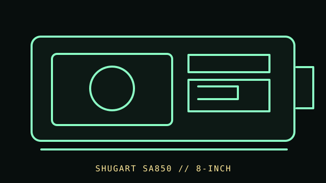

[ FLOPPY DRIVES // IDENTIFIED MODEL ]
Shugart SA850 8-inch Floppy Drive
The Shugart SA850 is an 8-inch floppy-drive model in the SA8xx series. It is a distinct mechanism from the SA800 and its configuration must be checked against the exact SA850 documentation.

MODEL IDENTIFICATION: Shugart SA850; record model plate, assembly suffix/revision, interface connector, and whether the unit is an OEM variant. Confirm the full designation, revision, interface and service-document edition. This record is not a general compatibility guarantee.
Recorded specifications
| Catalog model | Shugart SA850 8-inch Floppy Drive |
|---|---|
| Device type | 8-inch internal floppy mechanism |
| Interface / connector | Shugart SA850 drive interface per its OEM/service manual; host-controller wiring and signal assumptions are system-specific. |
| Media / formats | 8-inch floppy disks. Recording mode, side/track configuration, and capacity are revision/controller/format-dependent and are intentionally not generalized here. |
| Revision caution | Verify model suffix, label, board/firmware revision, cable and manual edition. Model-family similarity is not proof of pinout, BIOS support, interchangeability or format compatibility. |
Host and controller compatibility
- Use a controller documented for the exact SA850 configuration. Do not connect it to a 34-pin PC floppy cable based only on the physical form factor.
- Check connector, signal assignments, power, drive select, density, and termination against both the SA850 and host-controller manuals. BIOS support depends on the host controller and software, not the drive alone.
- SA850 and SA851/OEM variants may differ. Retain the complete suffix, label, board, and service-document revision in catalog notes.
Safe preservation and cleaning
Disconnect all power before inspection or cleaning. Do not feed visibly damaged or contaminated 8-inch media into the drive. Use the correct service-manual cleaning and alignment procedure; avoid unapproved solvents or touching the head surface.
Photograph labels and connectors before service. Record the host, controller, settings, software, condition and source document. Keep original media or raw captures intact; verify checksums before making derivatives.
Manufacturer manuals & archival references
- Shugart SA850/SA851 OEM Manual, November 1980 — Internet Archive / Bitsavers scanManufacturer OEM reference for model family and interface.
- Shugart SA850/SA851 Service Manual, November 1980 — Internet Archive / Bitsavers scanModel-family service information; confirm configuration and revision.
- Shugart SA850 OEM brochure — Internet ArchivePeriod manufacturer product-family reference.
Archived manuals may apply to a particular revision or family. The complete model/revision-specific manufacturer manual takes precedence. Capacities and recording modes are omitted where they cannot be tied to the cited model and format.